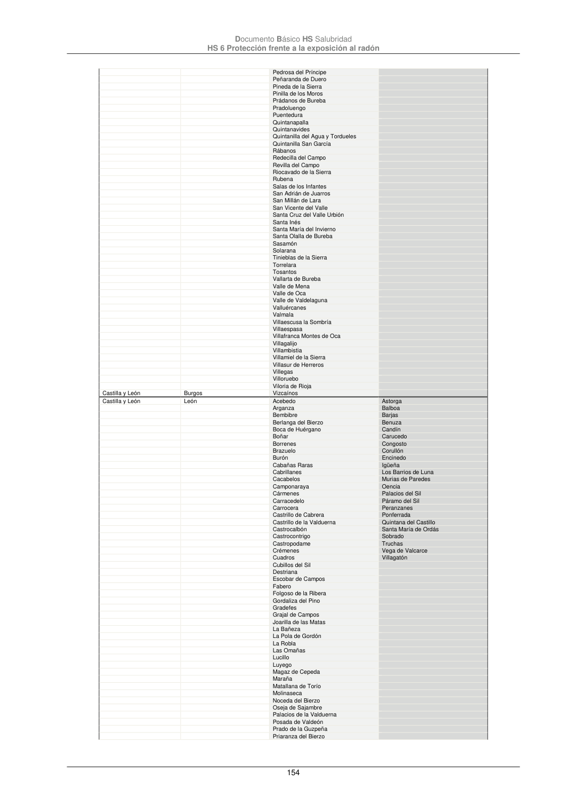

DB-HS Salubridad · edición 2022-06-14 · capa oficial
Documento DB-HS-oficial · SHA-256 del PDF 68df3caacc95f71aee2ec1ba7b2c65ae66155c21e3a8785521b8fdd4fd640d3b
Página física 154 de 184.
Copia fiel del PDF fuente · Fuente oficial
Ficha de la disposición en la fuente oficial
Formato: Texto de la página (Markdown)
Documento Básico HS Salubridad HS 6 Protección frente a la exposición al radón 154 Pedrosa del Príncipe Peñaranda de Duero Pineda de la Sierra Pinilla de los Moros Prádanos de Bureba Pradoluengo Puentedura Quintanapalla Quintanavides Quintanilla del Agua y Tordueles Quintanilla San García Rábanos Redecilla del Campo Revilla del Campo Riocavado de la Sierra Rubena Salas de los Infantes San Adrián de Juarros San Millán de Lara San Vicente del Valle Santa Cruz del Valle Urbión Santa Inés Santa María del Invierno Santa Olalla de Bureba Sasamón Solarana Tinieblas de la Sierra Torrelara Tosantos Vallarta de Bureba Valle de Mena Valle de Oca Valle de Valdelaguna Valluércanes Valmala Villaescusa la Sombría Villaespasa Villafranca Montes de Oca Villagalijo Villambistia Villamiel de la Sierra Villasur de Herreros Villegas Villoruebo Viloria de Rioja Castilla y León Burgos Vizcaínos Castilla y León León Acebedo Astorga Arganza Balboa Bembibre Barjas Berlanga del Bierzo Benuza Boca de Huérgano Candín Boñar Carucedo Borrenes Congosto Brazuelo Corullón Burón Encinedo Cabañas Raras Igüeña Cabrillanes Los Barrios de Luna Cacabelos Murias de Paredes Camponaraya Oencia Cármenes Palacios del Sil Carracedelo Páramo del Sil Carrocera Peranzanes Castrillo de Cabrera Ponferrada Castrillo de la Valduerna Quintana del Castillo Castrocalbón Santa María de Ordás Castrocontrigo Sobrado Castropodame Truchas Crémenes Vega de Valcarce Cuadros Villagatón Cubillos del Sil Destriana Escobar de Campos Fabero Folgoso de la Ribera Gordaliza del Pino Gradefes Grajal de Campos Joarilla de las Matas La Bañeza La Pola de Gordón La Robla Las Omañas Lucillo Luyego Magaz de Cepeda Maraña Matallana de Torío Molinaseca Noceda del Bierzo Oseja de Sajambre Palacios de la Valduerna Posada de Valdeón Prado de la Guzpeña Priaranza del Bierzo

Datos candidatos: compruebe celdas y notas en el PDF.